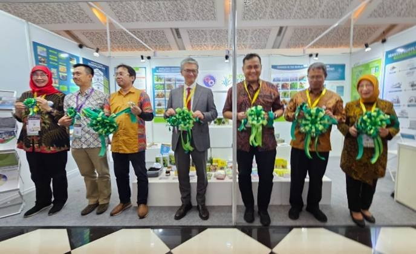
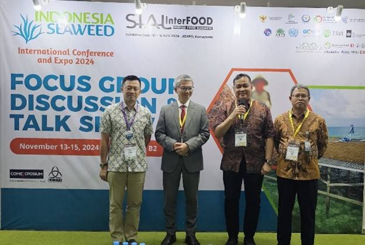
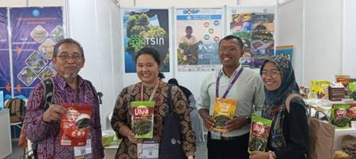

Mempromosikan Rumput Laut Indonesia: Pameran di SIAL Interfood 2024

Program Global Quality and Standards (GQSP) Indonesia Fase 2 mempromosikan rumput laut Indonesia untuk meningkatkan pangsa pasar. Portofolio produk dipamerkan di acara Salon International de l'Alimentation (SIAL) Interfood 2024 di Jakarta, bekerja sama dengan Jaringan Inovasi Rumput Laut Tropis (TSIN), KKP, dan program ini berpartisipasi dalam Paviliun Rumput Laut Indonesia yang dikelola oleh ASTRULI.

Program Global Quality and Standards (GQSP) Indonesia Fase 2, bekerja sama dengan Jaringan Inovasi Rumput Laut Tropis (TSIN) dan Asosiasi Rumput Laut Indonesia (ASTRULI), dengan bangga berpartisipasi dalam pameran Salon International de l'Alimentation (SIAL) Interfood 2024 di Jakarta dari tanggal 13-16 November 2024 dibawah stan TSIN, KKP. Acara ini menandai tonggak penting dalam mempromosikan rumput laut Indonesia dan berbagai aplikasinya, serta menyoroti pencapaian mitra kami, dan dampak program ini terhadap sektor rumput laut.

Partisipasi GQSP Indonesia Fase 2 bertujuan untuk mempromosikan dan menampilkan dukungan proyek GQSP untuk sektor rumput laut melalui penyorotan kolaborasi antara program GQSP, TSIN, dan ASTRULI serta mempromosikan produk berbasis rumput laut yang dikembangkan oleh UKM yang bermitra dengan program GQSP seperti CV Posko JaSuDa (Sulawesi Selatan), Koperasi Mina Agar Makmur (KMAM) (Karawang, Jawa Barat), PT Winner Perkasa Indonesia Unggul (Yogyakarta), CV Lars JaSuDa (Sulawesi Selatan), dan CV Bulan Bintang JaSuDa (Sulawesi Selatan).

Selama empat hari acara, stan TSIN menarik berbagai pengunjung dari berbagai latar belakang dan negara. Tingkat minat yang tinggi terlihat jelas, karena peserta dapat menjelajahi berbagai jenis dan produk rumput laut yang dipamerkan di satu tempat. Dari produk makanan seperti keripik rumput laut dan bumbu hingga produk non-makanan seperti losion tubuh, sabun, dan bio-stimulan, pengunjung dapat merasakan keanekaragaman rumput laut tanpa harus berkeliling seluruh aula. Kenyamanan ini memberikan mereka kesempatan unik untuk menemukan berbagai aplikasi rumput laut dalam satu kunjungan. Sehingga banyak pengunjung tidak hanya berinteraksi dengan pameran tetapi juga membeli produk yang dipamerkan.
Pameran ini secara resmi dibuka oleh Bapak Erwin Dwiyana, Direktur Pemasaran di KKP, diikuti oleh upacara pembukaan yang dihadiri oleh Bapak Kamiya, perwakilan UNIDO untuk Timor Leste, Indonesia, dan Filipina, serta Bapak Nono Hartanto, Direktur Rumput Laut, perwakilan dari Direktorat Jenderal Perikanan Budidaya, KKP. Stan tersebut menerima banyak pengunjung, termasuk perwakilan dari institusi akademik yang tertarik dengan potensi kolaborasi dan bantuan teknis untuk UKM. Beberapa menyatakan minat yang kuat dalam potensi kolaborasi, terutama di bidang bantuan teknis untuk UKM, yang menyoroti pengakuan yang semakin meningkat terhadap nilai program ini dalam mendorong inovasi dan pembangunan berkelanjutan dalam industri.
Stan tersebut terus menarik pengunjung, termasuk asosiasi mitra dan perwakilan KKP, yang memperkuat koneksi dan wawasan yang berharga. Kami juga terhubung dengan UKM di sektor makanan laut yang didukung oleh mitra kami, dan menjelajahi stan dari berbagai negara yang memamerkan produk rumput laut inovatif. Ini adalah pengalaman yang memperkaya yang penuh dengan pembelajaran dan kolaborasi.
Selama pameran, stan mengalami lonjakan minat, dengan pengunjung yang mencicipi rumput laut mentah dan melakukan pemesanan langsung. Salah satu mitra kami, sebuah UKM dari Yogyakarta, berhasil menjual habis keripik rumput laut Ulva mereka. Pengunjung juga menunjukkan minat yang besar pada katalog produk, memberikan umpan balik yang berharga untuk pameran kami berikutnya. Kegiatan pameran penuh dengan antusiasme, pembelajaran, dan koneksi yang menjanjikan. Hari terakhir menarik lebih banyak pengunjung karena merupakan akhir pekan, yang memungkinkan lebih banyak orang untuk mengunjungi pameran.

Pengunjung menunjukkan minat yang besar untuk berkolaborasi dengan proyek GQSP, mengakui tujuan bersama untuk memperkuat komunitas rumput laut. Mereka diarahkan untuk menjelajahi situs web proyek untuk informasi yang komprehensif. Kode QR yang disediakan di stan memungkinkan pengunjung untuk dengan mudah mengakses publikasi program (manual dan SOP) di situs web program dan mempelajari lebih lanjut tentang inisiatif ini. Acara ini dipromosikan secara aktif di platform media sosial, termasuk Instagram dan LinkedIn, dan diliput mendetail di edisi November 2024 Infoakuakultur. Liputan media sosial membantu meningkatkan visibilitas acara dan menarik lebih banyak pengunjung ke stan.

Selain berpartisipasi dalam pameran, program ini juga aktif terlibat dalam Diskusi Kelompok Terfokus (FGD) dan Talkshow sebagai bagian dari Konferensi dan Expo Internasional 2024. Perwakilan program, Bapak Boedi Julianto, memoderatori FGD hari pertama yang berfokus pada kolaborasi pemangku kepentingan dalam mengatasi masalah dalam bisnis rumput laut di Indonesia. Diskusi yang hidup ini menyoroti pentingnya kolaborasi di antara para pemangku kepentingan untuk mengatasi tantangan yang dihadapi oleh industri rumput laut di Indonesia. Perwakilan program, Bapak Sudari, memimpin diskusi pada hari kedua yang berpusat pada evaluasi data produksi dan permintaan untuk mendukung industri rumput laut nasional yang berkelanjutan. Diskusi ini menekankan perlunya data yang akurat untuk mendukung pembangunan berkelanjutan industri rumput laut di Indonesia.
Partisipasi kami dalam SIAL Interfood 2024 merupakan kesuksesan besar, menampilkan produk inovatif berbasis rumput laut yang dikembangkan oleh mitra kami dan menyoroti kontribusi signifikan program GQSP terhadap sektor rumput laut. Kami berharap dapat membangun pencapaian ini dan terus mempromosikan rumput laut Indonesia di panggung global.
PSO - 2024